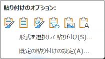
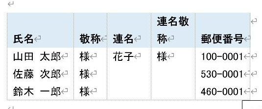
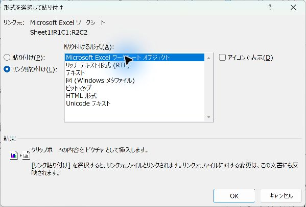

Excelの表をWordへ貼る3つの方法（貼り付け／リンク貼り付け／オブジェクト）
Excelの表をWordへ貼る方法は3つあります。普通は通常の貼り付けで十分です。更新や編集が必要なときだけ別の方法を選びます。
結論
普通の資料ならCtrl＋Vで貼って、Wordの表にするだけで十分です。Excelの修正を反映したいときだけリンク貼り付け、Word内でExcelの数式を編集したいときだけ埋め込みを使います。
入門（Lv.1）
- 範囲をコピー
- 通常の貼り付け
- ページ幅に収める
- 確認して保存
目次
3つの方法の選び方
| 方法 | Wordでの編集 | 元のExcelを修正したとき | 選ぶ場面 |
|---|---|---|---|
| 通常の貼り付け（Wordの表） | セル内の文字・表の罫線を編集 | 自動では変わらない | 一般的な資料 |
| リンク貼り付け | 貼り付け形式により異なる | リンクを更新すると反映 | 元のExcelを直したらWordも更新したいとき |
| 埋め込み | ダブルクリックしてExcelとして編集 | 元ファイルとは独立 | Word内でExcelの数式を編集したいとき |
手順1Excelで必要な範囲だけコピーする
- Excelを開き、見出しと必要な行をドラッグして選びます。シート全体ではなく、資料に載せる範囲を選びます。
- Ctrl＋Cを押します。セルを編集中の場合はEnterで確定してからコピーします。
- Wordを開き、表を入れたい場所をクリックして文字のカーソルを表示します。

手順2通常の貼り付けでWordの表にする
- WordでCtrl＋Vを押します。
- 貼り付けた直後の「貼り付けのオプション」、または「ホーム」→「貼り付け」のメニューを開きます。
- Excelの色や罫線を使うなら「元の書式を保持」、文書の書式へ合わせるなら「貼り付け先のスタイルを使用」を選びます。
- 「リンクして〜」の選択肢は、通常の表として独立させたい場合には選びません。
確認セル内をクリックして文字を編集できれば成功です。元のExcelを直しても、この表は自動では変わりません。


手順3Wordの表をページ幅へ収める
- 貼り付けたWordの表の中をクリックします。
- 「テーブル レイアウト」（版によって「レイアウト」）→「自動調整」→「ウィンドウ幅に自動調整する」を選びます。
- 長い見出しや金額が読めるか確認し、必要なら列幅をドラッグして調整します。
確認「ファイル」→「印刷」のプレビューで、右端の列や2ページ目以降の欠けを確認します。
この自動調整はWordの表用ですExcelオブジェクトや図として貼った場合は、選択枠のサイズや貼り付け形式を見直します。
更新が必要な場合：リンク貼り付け
- Excelのファイルを保存し、必要な範囲をコピーします。保存先とファイル名を先に決めておきます。
- WordでCtrl＋Alt＋Vを押し、「形式を選択して貼り付け」を開きます。
- 「リンク貼り付け」を選び、用途に合う形式を選びます。Excel形式で扱うなら「Microsoft Excel ワークシート オブジェクト」を選んで「OK」を押します。
- Excelの値を修正して保存し、Wordのオブジェクトを右クリックしてリンクの更新を行い、結果を確認します。
- リンク元の変更や解除は、リンクを含む文書の「ファイル」→「情報」→「ファイルへのリンクの編集」で確認します。
元のファイルを移動・名前変更するとリンクが切れる場合があります。Wordだけを渡す場合はリンクを解除するか、通常の表や図へ貼り直し、更新不要の完成版として保存します。

Word内でExcelとして編集する：埋め込み
- Excelの必要範囲をコピーします。
- WordでCtrl＋Alt＋Vを押し、「貼り付け」を選びます。「リンク貼り付け」にはしません。
- 「Microsoft Excel ワークシート オブジェクト」を選び、「OK」を押します。
- 貼った表をダブルクリックするとExcelとして編集できます。終わったら表の外をクリックしてWordへ戻ります。
確認元のExcelを修正しても反映されないことを確認します。
配布前の確認埋め込みでは、見えている範囲以外のブック情報が文書に含まれることがあります。配布前には埋め込みを開いて内容を確認し、必要なセルだけの別ブックを使うか、最終版を図やPDFにする方法を検討します。
保存前の確認
- 通常貼り付け・リンク・埋め込みのどれを使ったか確認します。
- 金額・日付・列の見出しが欠けていないか確認します。
- リンク付きなら元ファイルの保存先を確認し、更新の要否を決めます。
- 資料を保存し、印刷プレビューで全ページを確認します。
実機で確認した内容（2026年11月3日・Word／Excel 16.0）
通常の貼り付けでWordの表になり、セルの文字を読み取れること、自動調整が設定できることを確認しました。「形式を選択して貼り付け」のオブジェクトは、文書内に1つ埋め込まれました。リンクの更新は確認していません。